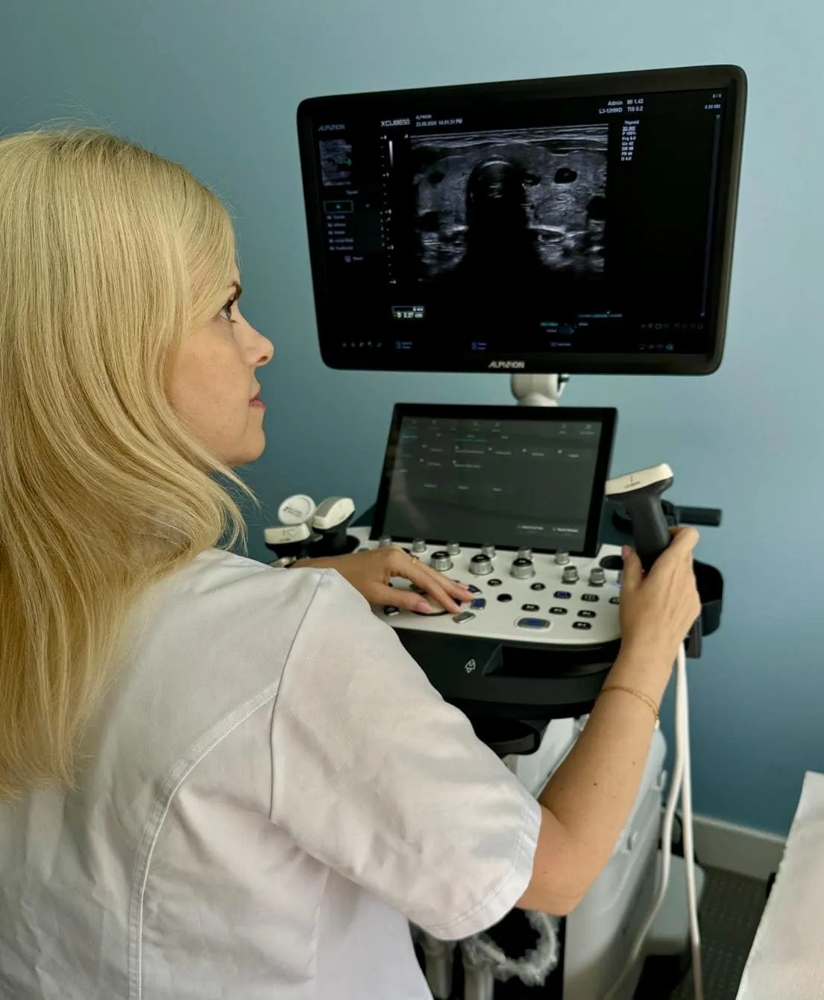
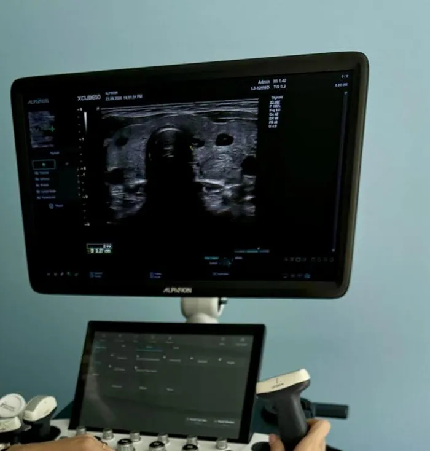
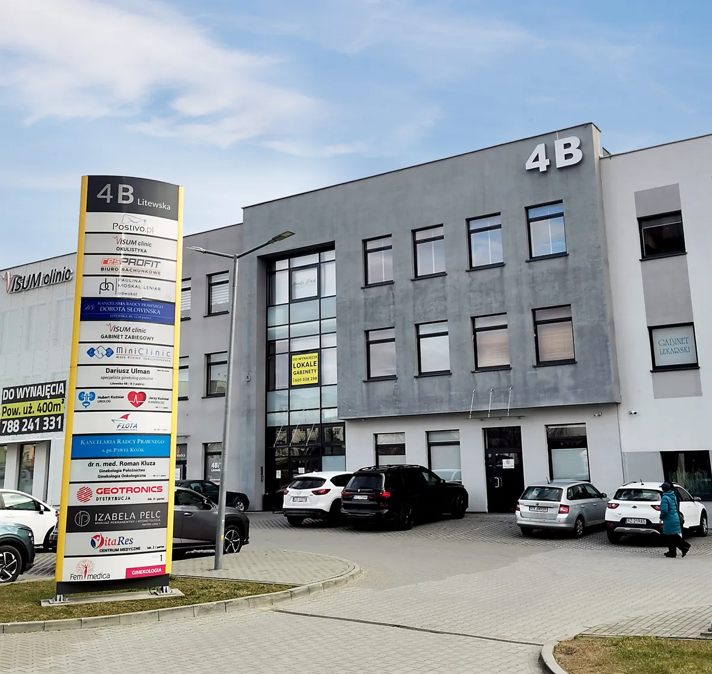

Tarczyca
- Choroba Hashimoto
- Niedoczynność i nadczynność tarczycy
- Guzy tarczycy
- Choroba Gravesa-Basedowa
- Zapalenie tarczycy
- Zaburzenia funkcji tarczycy w ciąży
- Wytrzeszcz gałek ocznych

Lek. Aneta Kołodziej, specjalista endokrynologii, nefrologii i chorób wewnętrznych. W prywatnym gabinecie przyjmuję wyłącznie na konsultacje endokrynologiczne, a USG tarczycy wykonuję i omawiam od razu w trakcie wizyty.
Telefon odbieramy
pon.-pt. 8-19, sob. 9-15
Jedna wizyta to rozmowa, przegląd wyników i badanie. Jeśli lekarz uzna, że jest potrzebne, USG tarczycy robione jest na miejscu, bez osobnego terminu.

Zajmuję się diagnostyką i leczeniem zaburzeń hormonalnych. Dzięki doświadczeniu internistycznemu patrzę na pacjenta całościowo, a nie tylko na jeden wynik.
W prywatnym gabinecie prowadzone są tylko konsultacje endokrynologiczne. Jeśli nie wiedzą Państwo, czy dany problem jest do endokrynologa, najprościej zapytać przy rejestracji telefonicznej.
Jestem absolwentką Śląskiego Uniwersytetu Medycznego w Katowicach, specjalistą trzech dziedzin:
endokrynologianefrologiachoroby wewnętrzne
Przez lata pracowałam w klinikach i stacjach dializ w Rzeszowie, Warszawie i Przeworsku, a obecnie także w szpitalu w Rudnej Małej. To doświadczenie wnoszę do każdej konsultacji w gabinecie.
Opinie pacjentów można przeczytać i dodać w Google oraz na ZnanyLekarz. Uwagi najlepiej przesyłać mailowo na adres gabinetu.
ul. Litewska 4b/10, 35-302 Rzeszów
Główne wejście do budynku B, gabinet nr 10 znajduje się na I piętrze. Budynek stoi obok Szpitala Wojewódzkiego nr 2 przy ul. Lwowskiej.

Wizyty najlepiej umawiać telefonicznie. Jeśli nie odbierzemy, oddzwonimy.